PlayStation (PS1)
O primeiro PlayStation foi lançado pela Sony em 1994 no Japão e em 1995 no restante do mundo. O console marcou a entrada da empresa no mercado de videogames e revolucionou a indústria ao popularizar o uso de CDs, permitindo gráficos 3D mais avançados e jogos mais completos. Durante sua trajetória, o PS1 recebeu títulos icônicos que marcaram gerações, como Final Fantasy VII, Metal Gear Solid, Resident Evil 2, Crash Bandicoot e Gran Turismo. Esses jogos ajudaram a definir o padrão dos games modernos e consolidaram o sucesso do console. O PlayStation foi produzido até 2006 e ultrapassou a marca de 100 milhões de unidades vendidas em todo o mundo.
Jogos mais famosos
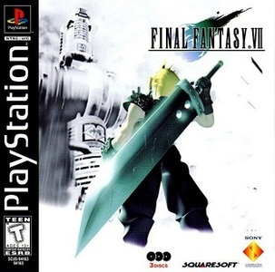
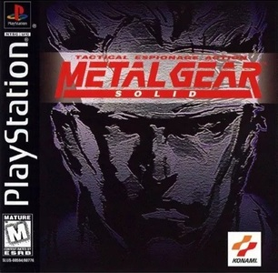
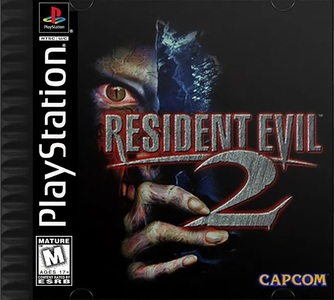
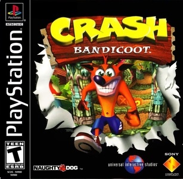
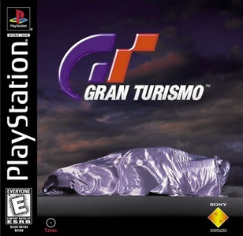

PlayStation 2 (PS2)
O PlayStation 2 foi lançado em 2000 e se tornou o console mais vendido da história, ultrapassando a marca de 155 milhões de unidades comercializadas em todo o mundo. Além de trazer avanços gráficos significativos em relação à geração anterior, o PS2 também funcionava como leitor de DVD, um grande diferencial na época, o que ajudou ainda mais em sua popularização. O console contou com uma biblioteca gigantesca de jogos, incluindo títulos icônicos como Grand Theft Auto: San Andreas, God of War, Resident Evil 4, Shadow of the Colossus e Need for Speed: Most Wanted, que marcaram a indústria e conquistaram milhões de jogadores. O PlayStation 2 teve uma vida útil extremamente longa e só deixou de ser produzido em 2013, consolidando seu legado como um dos consoles mais importantes da história.
Jogos mais famosos
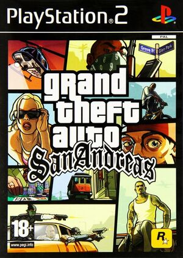
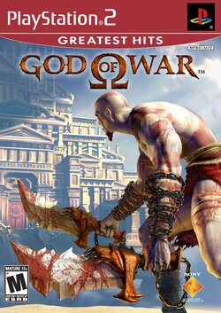
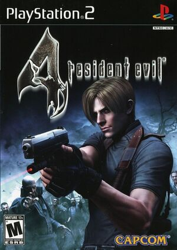
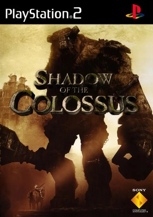
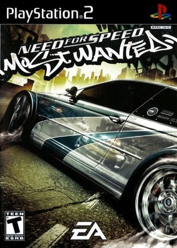

PlayStation 3 (PS3)
O PlayStation 3 foi lançado em 2006 e marcou uma grande evolução tecnológica na indústria dos games, trazendo como destaque o leitor Blu-ray e suporte a jogos em alta definição (HD). Além do avanço gráfico, o console também foi responsável por fortalecer os serviços online da Sony com a PlayStation Network, permitindo partidas multiplayer, compras digitais e interação entre jogadores. O PS3 contou com uma biblioteca de jogos memoráveis, incluindo títulos como The Last of Us, Grand Theft Auto V, Uncharted 2: Among Thieves, Resident Evil 5 e God of War III, que ajudaram a consolidar a geração. O console vendeu cerca de 87 milhões de unidades ao redor do mundo e foi descontinuado em 2017, deixando um legado importante na evolução dos videogames.
Jogos mais famosos
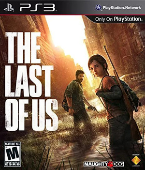
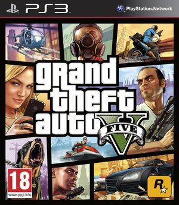
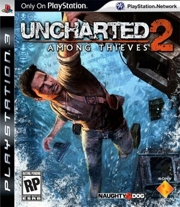
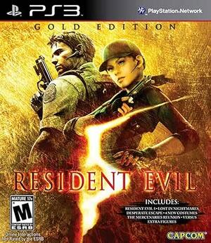
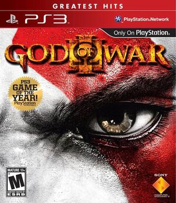

PlayStation 4 (PS4)
O PlayStation 4 foi lançado em 2013 com foco em alto desempenho para jogos e uma forte integração com serviços online, consolidando ainda mais o ecossistema da PlayStation Network. O console trouxe gráficos significativamente mais avançados, além de recursos como compartilhamento de gameplay, transmissões ao vivo e uma experiência mais conectada entre jogadores. Sua biblioteca de exclusivos foi um dos grandes destaques da geração, com títulos marcantes como God of War (2018), The Last of Us Part II, Marvel’s Spider-Man, Horizon Zero Dawn e Resident Evil 2 Remake, que elevaram o nível de qualidade dos jogos. O PlayStation 4 foi um enorme sucesso comercial, ultrapassando a marca de 117 milhões de unidades vendidas e se tornando um dos consoles mais populares da história.
Jogos mais famosos
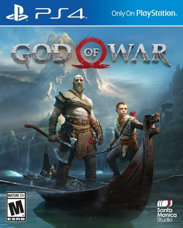
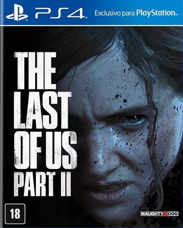
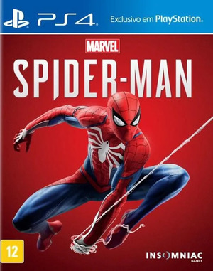
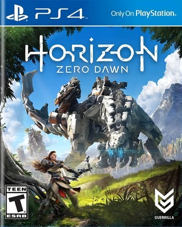
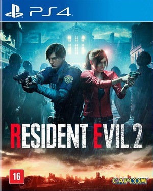

PlayStation 5 (PS5)
O PlayStation 5 foi lançado em 2020 e representa a atual geração de consoles da Sony, trazendo uma das maiores evoluções tecnológicas já vistas na indústria dos games. Equipado com um SSD ultrarrápido, suporte a ray tracing e gráficos em 4K, o PS5 oferece tempos de carregamento praticamente instantâneos e uma experiência visual extremamente imersiva. Outro grande destaque é o controle DualSense, que introduz feedback tátil e gatilhos adaptáveis, aumentando ainda mais a sensação de imersão nos jogos. A nova geração conta com títulos de grande impacto, como Resident Evil 9: Requiem, Horizon Forbidden West, God of War Ragnarök, Gran Turismo 7 e Astro Bot, demonstrando todo o potencial do console. O PlayStation 5 segue em produção, recebendo constantes atualizações e novos lançamentos, consolidando seu espaço como um dos consoles mais avançados da atualidade.
Jogos mais famosos
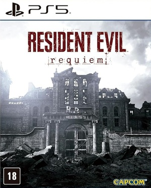
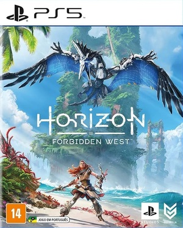
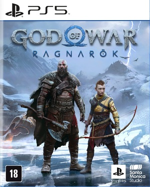
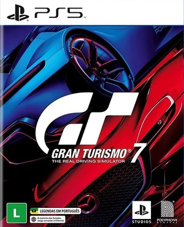
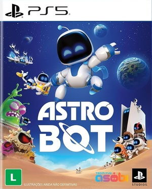